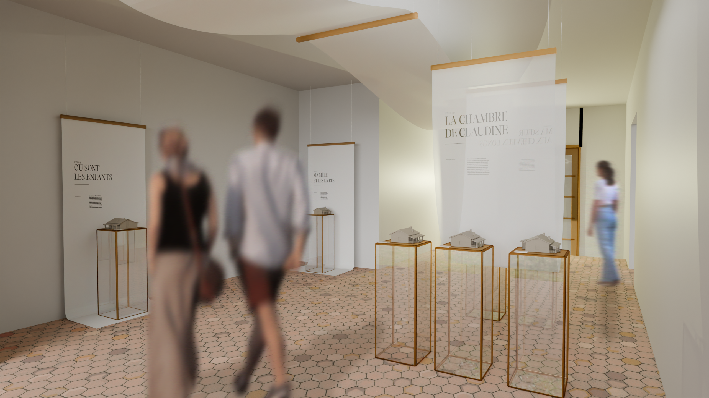
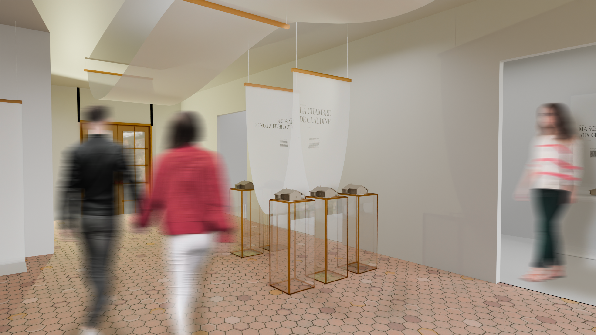
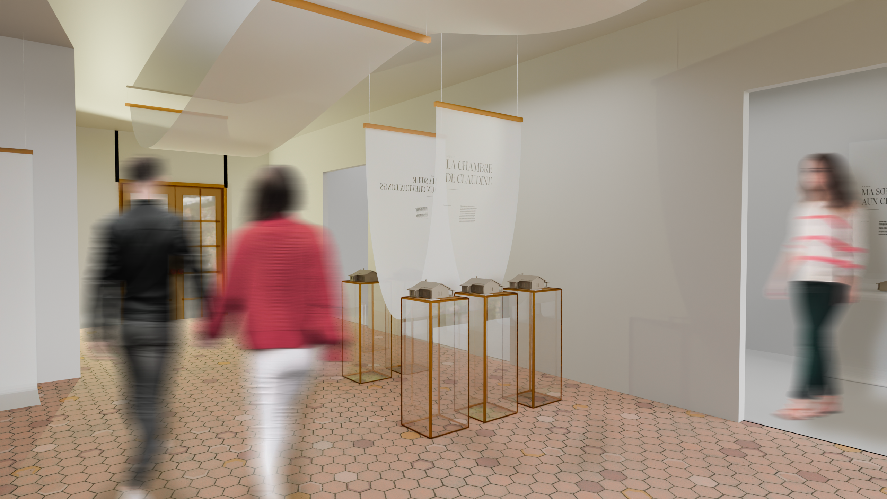
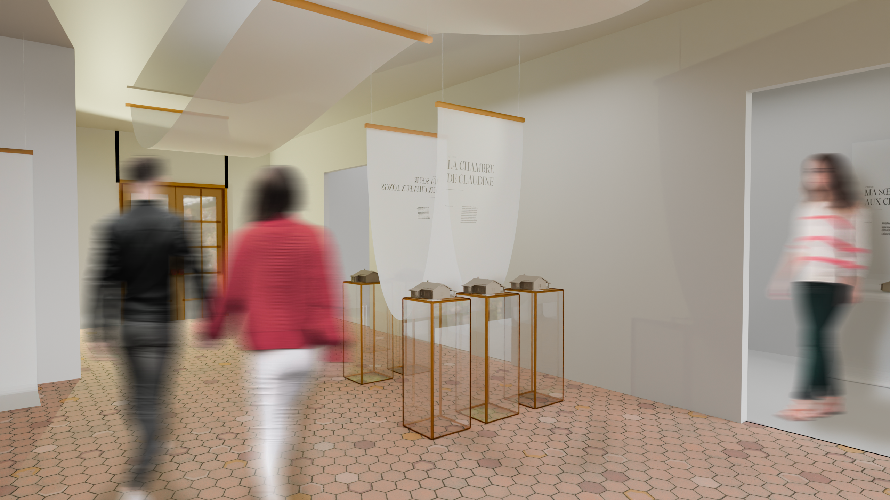

 
 Exposition scénographique — La maison de Claudine
Exposition temporaire de maquettes inspirées de La maison de Claudine au musée Colette.
L’enjeu est de faire surgir les souvenirs par l’absence en offrant une vue d’ensemble de l’espace tout en dévoilant progressivement des fragments, comme les souvenirs qui reviennent à Colette et se déposent sur la page.
